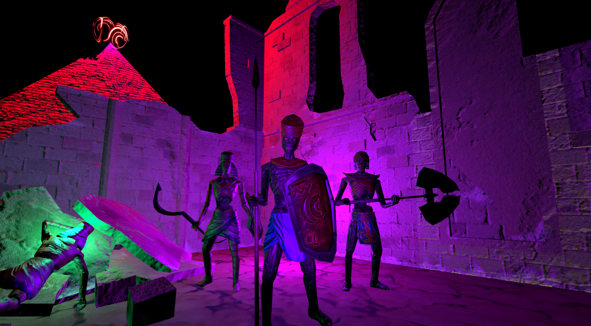

// portfolio
Published Games
Unity
Mafia Deli: Leave the Gun, Take the Sandwich
A humorous retro FPS set in a New York deli. Make sandwiches, survive mafia raids, and spend your earnings on firepower.
▶ Play Now
itch.io
View Project Details →

UnityHorus: Vengeance Reborn
Play as Horus, the Egyptian deity of the sky, traversing shifting sand dunes and confronting looming dark forces. An art-first vertical slice built around Egyptian iconography and atmospheric design.
Portfolio Project
View Project Details →
Unity
Project: Interception
An astronaut is sent to an abandoned space station, but he isn't alone. A map exploration level with collection mechanics and enemy AI pathing.
▶ Play Now
View Project Details →
 Unity
Unity
Factory Flip
A factory worker sorts crates into the correct chutes using a single button. Precision is key — every mistake costs you. Simple concept, art-driven execution.
▶ Play in Browser
View Project Details →